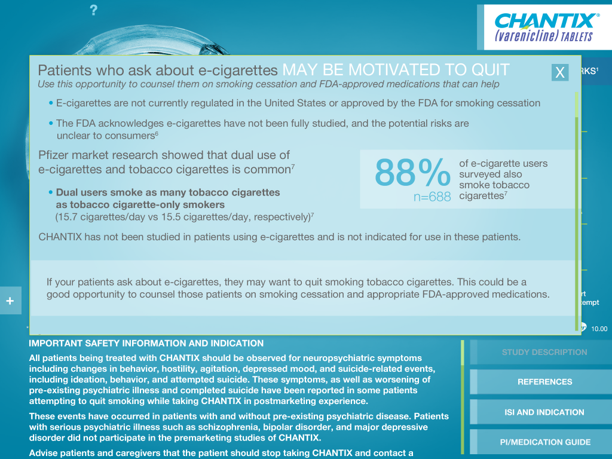

<!DOCTYPE html>
<html>
<head>
    <!--<meta charset="utf-8" />-->
    
    <meta http-equiv="x-dns-prefetch-control" content="off" />
  
    <meta name="apple-mobile-web-app-capable" content="yes" />
    <meta name="format-detection" content="telephone=no" />
    <meta name="apple-mobile-web-app-status-bar-style" content="black-translucent" />
    <link href="styles/common.css" rel="stylesheet" type="text/css" />
    <link href="styles/style.css" rel="stylesheet" type="text/css" />
    <!--<script type="text/javascript">
        if ('ontouchmove' in document)
            document.addEventListener('touchmove', function (e) { e.preventDefault(); });
    </script>-->
</head>
<body>
    <div class="body">
        
        <!-- -->
        <div class='overlays'>
            <a class="overlay1 active" href="javascript:void(0)" onclick="popups.overlay_1.show();">
                <span>?</span></a> <a class="overlay1" href="javascript:void(0)" onclick="popups.overlay_2.show();">
                    <span>?</span></a> <a class="overlay1" href="javascript:void(0)" onclick="popups.overlay_3.show();">
                        <span>?</span></a> <a class="overlay1 isi" href="javascript:void(0)" onclick="popups.overlay_4.show();">
                            <span>?</span></a>
        </div>
        <!--         -->
        <div id="main_data">
            <div class='tab-pages-container'>
                <div class='tab-pages'>
                    <!--  PAGE 1 START-->
                    <div id='page1' class="active">
                        <div class='left-section'>
                            <div class='top-line'>
                            </div>
                            <div class='bottom-line'>
                            </div>
                            <span class='first-line' style="position: absolute; top: 10px;">POWER TO</span> 
                            <span class='big-text' style="position: absolute; top: 160px; left: -35px">HELP THEM</span>
                            <span class='last-line' style="position: absolute; top: 269px;">QUIT</span>
                        </div>
                        <div class="left_section_bottom">
                            
                        </div>
                        <p class='left-bottom-text'>
                            *Patients received up to 10 minutes of counseling at each clinic visit.<sup>1</sup></p>
                        <a href="javascript:void(0)" onclick='veeva.gotoSlide("CHANTIX_JAN_POA_20.00");'>
                            <p class='top-right-text'>
                                HOW CHANTIX WORKS<sup>1</sup>
                            </p>
                        </a>
                        <div class='right-links' style="z-index:999;">
                            <a href="javascript:void(0)" >
                                <span>QUIT APPROACHES</span> </a>
                                <a href="javascript:void(0)" 
                                    ><span>OTHER PATIENT TYPES</span> </a>
                                    <a href="javascript:void(0)" 
                                       ><span>UPDATED SAFETY DATA</span> </a>
                                        <a href="javascript:void(0)" 
                                           ><span>COST AND COVERAGE</span> </a>
                        </div>
                        <p class='right-bottom-text'>
                            CHANTIX is indicated as an aid to smoking cessation treatment in adults<br />
                            18 and over. Patients may benefit from behavioral modification and support
                            <br />
                            during their quit attempt. Patients should be encouraged to continue to attempt<br />
                            to quit if they have lapses after quit day.
                        </p>
                        <ul class='sign_off_layer'>
                            <li>VCP736911-01</li>
                            <li>©2015 Pfizer Inc.</li><li>All rights reserved.</li><li>May 2015 </li>
                            <li>
                                </li>
                            <li class="page_number">10.00</li>
                        </ul>
                        <div class='plus-popup'>
                            <a class='meaningful-link' href="javascript:void(0)" class="link1"><span style="opacity: 1 !important;">
                                MEANINGFUL USE</span></a> 
                             <a class='dual-use' href="javascript:void(0)" class="link1">
                                    <span style="opacity: 1 !important;">DUAL USE</span></a> 
                             <a class='plus' href="javascript:void(0)"
                                        class="link1">&#43;</a>
                                        <a class='minus' href="javascript:void(0)" class="link1">&#45;</a>
                        </div>
                    </div>
                </div>
                <!--PAGE 1 ENDS-->
            </div>
            <a href="javascript:void(0)" class="logo">
                </a>
        </div>
        <div id="footer">
            <div id="ssi" class="scrollview">
                <div class="viewport" id="ssi1">
                    <div class="overview">
                        <h4 id="ssi_header_text">
                            IMPORTANT SAFETY INFORMATION AND INDICATION
                        </h4>
                        <p class="bold">
                            All patients being treated with CHANTIX should be observed for neuropsychiatric
                            symptoms<br />
                            including changes in behavior, hostility, agitation, depressed mood, and suicide-related
                            events,<br />
                            including ideation, behavior, and attempted suicide. These symptoms, as well as
                            worsening of<br />
                            pre-existing psychiatric illness and completed suicide have been reported in some
                            patients<br />
                            attempting to quit smoking while taking CHANTIX in postmarketing experience.
                        </p>
                        <p class="bold">
                            These events have occurred in patients with and without pre-existing psychiatric
                            disease. Patients<br />
                            with serious psychiatric illness such as schizophrenia, bipolar disorder, and major
                            depressive<br />
                            disorder did not participate in the premarketing studies of CHANTIX.
                        </p>
                        <p class="bold">
                            Advise patients and caregivers that the patient should stop taking CHANTIX and contact
                            a<br />
                            healthcare provider immediately if agitation, hostility, depressed mood, or changes
                            in behavior or thinking that are not typical for the patient are observed, or if
                            the patient develops suicidal ideation or suicidal behavior. In many postmarketing
                            cases, resolution of symptoms after discontinuation of CHANTIX was reported, although
                            in some cases the symptoms persisted; therefore, ongoing monitoring and supportive
                            care should be provided until symptoms resolve.
                        </p>
                        <p>
                            CHANTIX is contraindicated in patients with a history of serious hypersensitivity
                            or skin reactions to CHANTIX.
                        </p>
                        <p>
                            During clinical trials and the postmarketing experience, there have been reports
                            of seizures in patients treated with CHANTIX, with or without a history of seizures.
                            CHANTIX should be used cautiously in patients with a history of seizures or other
                            factors that can lower the seizure threshold. Instruct patients to discontinue CHANTIX,
                            and contact a healthcare provider immediately if they experience a seizure while
                            on treatment.
                        </p>
                        <p>
                            There have been postmarketing reports of patients experiencing increased intoxicating
                            effects of alcohol while taking CHANTIX, including unusual and sometimes aggressive
                            behavior directed to oneself or to others and often accompanied by amnesia. Advise
                            patients to reduce the amount of alcohol they consume while taking CHANTIX until
                            they know whether CHANTIX affects their tolerance for alcohol.
                        </p>
                        <p>
                            Patients should be informed that there have been reports of serious skin reactions,
                            such as Stevens Johnson Syndrome and Erythema Multiforme and of angioedema, with
                            swelling of the face, mouth, and neck that can lead to life-threatening respiratory
                            compromise. Patients should be instructed to discontinue CHANTIX and immediately
                            seek medical care if they experience these symptoms or at the first sign of rash
                            with mucosal lesions or any other signs of hypersensitivity.
                        </p>
                        <p>
                            In a meta-analysis of clinical trials including a trial in patients with stable
                            cardiovascular disease, while serious cardiovascular events were infrequent overall,
                            certain serious cardiovascular events were reported more frequently in patients
                            treated with CHANTIX than placebo. These events occurred primarily in patients with
                            known cardiovascular disease. Instruct patients to notify their healthcare providers
                            of new or worsening cardiovascular symptoms and to seek immediate medical attention
                            if they experience signs and symptoms of myocardial infarction or stroke.
                        </p>
                        <p>
                            The most common adverse reactions include nausea (30%), abnormal dreams, constipation,
                            flatulence, and vomiting. Patients should be informed that they may experience vivid,
                            unusual, or strange dreams during treatment with CHANTIX. Patients should be advised
                            to use caution driving or operating machinery or engaging in other potentially hazardous
                            activities until they know how CHANTIX may affect them.
                        </p>
                        <p>
                            Safety and efficacy of CHANTIX in combination with other smoking cessation drug
                            therapies have not been studied. Dosage adjustment with CHANTIX is recommended in
                            patients with severe renal impairment or in patients undergoing hemodialysis.
                        </p>
                        <p>
                            Smoking cessation, with or without treatment with CHANTIX, may alter the pharmacokinetics
                            or pharmacodynamics of some drugs, such as theophylline, warfarin, and insulin.
                            Dosage adjustment for these drugs may be necessary.
                        </p>
                        <h4 class='bold'>
                            INDICATION</h4>
                        <p>
                            CHANTIX is indicated as an aid to smoking cessation treatment in adults 18 and over.
                            Patients may benefit from behavioral modification and support during their quit
                            attempt. Patients should be encouraged to continue to attempt to quit if they have
                            lapses after quit day.
                        </p>
                    </div>
                </div>
            </div>
            <ul id="toolbar">
                <li class="sd disabled"><a href="javascript:void(0)"><span>STUDY DESCRIPTION</span>
                </a></li>
                <li class="reference"><a href="javascript:void(0)"><span>REFERENCES</span> </a></li>
                <li class="isi"><a href="javascript:void(0)"><span>ISI AND INDICATION</span> </a>
                </li>
                <li class="pi"><a href="javascript:void(0)"><span>PI/MEDICATION GUIDE</span> </a>
                </li>
            </ul>
        </div>
    </div>
    <script src="scripts/jquery.js" type="text/javascript"></script>
    <script src="scripts/jquery.iscroll.js" type="text/javascript"></script>
    <script src="scripts/tabs.js" type="text/javascript"></script>
    <script src="scripts/veeva.js" type="text/javascript"></script>
    <script src="scripts/popup.js" type="text/javascript"></script>
    <script src="scripts/app.js" type="text/javascript"></script>
    <script src="scripts/script.js" type="text/javascript"></script>
</body>
</html>
<script>
$(document).ready(function(){
    //alert( $('.right-links a').index());
   $('.right-links a').each(function(index){
    $(this).bind("click touchend",function(){
    if(index==0){
		veeva.gotoSlide('CHANTIX_JAN_POA_30.00');
       
     }else if(index==1){
		veeva.gotoSlide('CHANTIX_JAN_POA_50.00');
        
     }else if(index==2){
		 veeva.gotoSlide('CHANTIX_JAN_POA_60.00');

       
     }else if(index == 3){
		 veeva.gotoSlide('CHANTIX_JAN_POA_80.00');
         
         
     }
     else{

     }       
    }); 
  });
 
});
</script>
